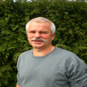

Rede auf der Mahnwache Potsdammer Platz, Juli 2015
Redner/Author: Jürgen Möbius
Auf der Webseite seit 07.04.2016

Entschuldigung!
Ich entschuldige mich bei denen, die hierher gekommen sind, die aus ihren Heimatländern vertrieben wurden, die sich aufmachten, weil ihre Heimat ihnen keine Lebensperspektive mehr bieten konnte.
Bei denen, die ihre Angehörigen in ihrer Heimat und auf der Flucht zu uns verloren haben. Bei denen, den man ihr Zuhause, ihre Existenzgrundlage zerstört hat.
Ich bin mir bewusst, dass ich durch mein Verhalten deren Not und deren Ängste mit verursacht habe.
Ich selbst war durch Desinformationen, Ablenkungen und eigenen Existenzängsten nicht in der Lage, mich gegen Ungerechtigkeiten, die ich mehr und mehr wahrgenommen habe, zu erheben.
Erst jetzt, genauer gesagt seit über einem Jahr, stehe ich Montag für Montag mit vielen anderen auf der Straße und versuche für den Frieden, für die Freiheit und für die Gerechtigkeit bei meinen Mitmenschen zu werben. Es ist ein sehr mühseliges Unterfangen.
Und manchmal bin ich am Verzweifeln und ich frage mich für was lade ich mir diese Strapaze auf.
Und dann sehe ich die schrecklichen Bilder aus den Kriegsgebieten, aus den Gegenden auf der Welt, die auch für meinen Wohlstand zerstört werden.
Ich sehe in eure Augen, die ihr hier steht und das Gleiche empfindet.
Die jeden Montag für Montag hierher kommen und mit ihren bescheidenen Möglichkeiten etwas für eine friedlichere, freiere und gerechtere Welt unternehmen wollen.
Ihr macht mir Mut und vertreibt meine Zweifel.
Ich kann mich nur aufrichtig und demütig für das Leid, dass diese Menschen, die den Weg in unser Land gefunden haben, entschuldigen.
Es beunruhigt mich und es macht mich nachdenklich, wenn ich die momentane Berichterstattung in den Mainstream Medien sehe.
Es wird in diesen Medien ein beträchtlicher Raum über die aktuellen Übergriffe auf die Menschen, die es bis hierher geschafft haben, zur Verfügung gestellt.
Es wird in den Medien verbreitet, dass sie hier willkommen sind.
Was mir fehlt ist eine umfassende Berichterstattung, welche Ursachen diese Menschen dazu veranlasst haben, den Weg auf sich zu nehmen und hierher zu kommen.
Machen die Medien mit Absicht nicht auf die Ursachen aufmerksam? Ich finde dafür nur ein Wort, heuchlerisch.
Es wird so getan, als würden wir alle überhaupt nichts mit den Ursachen zu tun haben.
Die Botschaft die uns allen präsentiert wird, heißt: Wir machen weiter so, wir schicken unsere Waffen in alle Welt, wir konsumieren weiter wie bisher, wir jagen dem Wachstum hinterher und entspannen uns mit dem Angebot an Unterhaltung.
Auf jeden Fall sollen wir nicht die Möglichkeit bekommen, selbst nachzudenken und daraus Schlüsse und Veränderungen für uns abzuleiten.
Stellen wir die Rüstungsexporte in Frage? Stellen wir unser Konsumverhalten in Frage? Stellen wir den Wachstumswahn in Frage?
Das Gewissen der Nation wird beruhigt mit Bildern und Aussagen: Wir helfen den Menschen, die es zu uns geschafft haben. Wir heißen sie hier Willkommen.
Ich sehe die Menschen, die es hierher geschafft haben als große Bereicherung und Chance für uns alle an.
Vermitteln wir diesen Menschen schnellst möglich unsere Sprache, damit sie mit uns gemeinsam die richtigen Fragen stellen können.
Laden wir sie ein, mit uns gemeinsam hier für den Frieden, für die Freiheit und die Gerechtigkeit zu werben.
Schaffen wir gemeinsam eine Gruppe, die man nicht mehr unbeachtet lassen kann,
die man durch die Vielzahl der unterschiedlichen Merkmale, wie Hautfarbe, Religionszugehörigkeit, sexueller Orientierung und Herkunft nicht mehr verunglimpfen kann.
Wir alle haben ein Ziel.
Friedlich, frei und möglichst gerecht miteinander zu leben.
Es ist ein langer Weg aber wir werden ihn gehen.
Damit das Morden im Namen eines angeblich gerechten Krieges, die Zerstörung unserer Umwelt für die Gier einiger und die Ausbeutung unserer Mitmenschen auf diesem Planeten endlich aufhört.
Ich danke euch für eure Aufmerksamkeit.